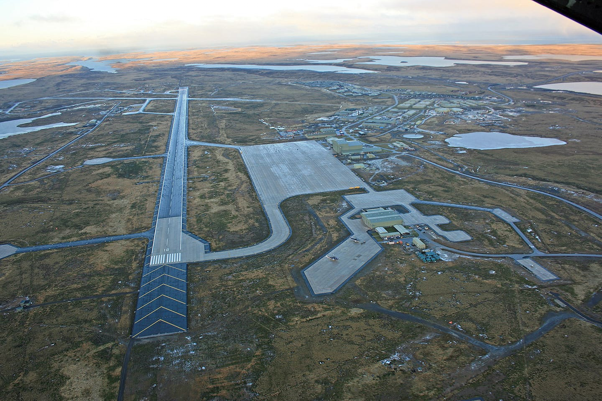
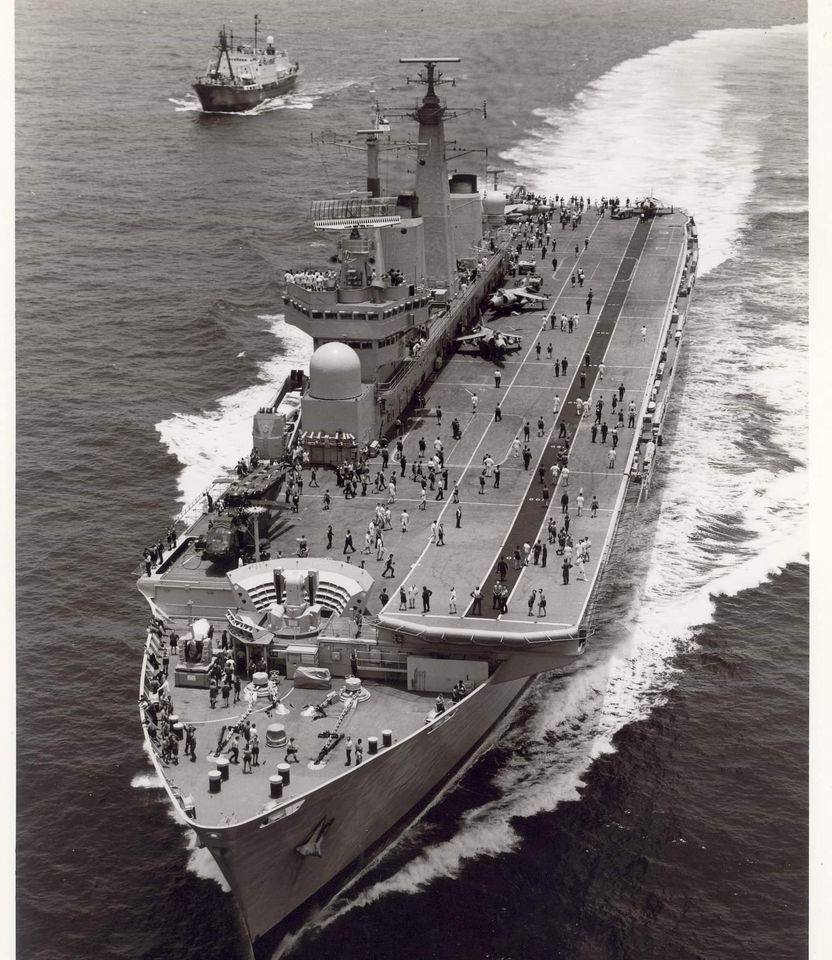
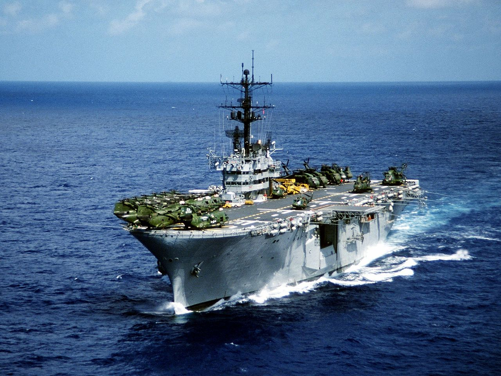
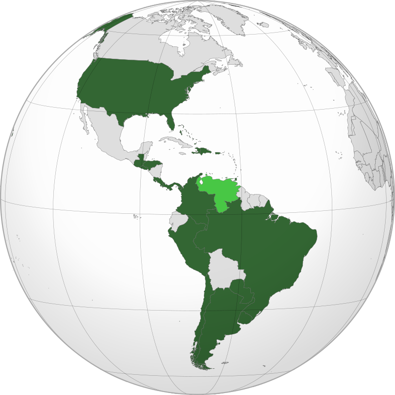
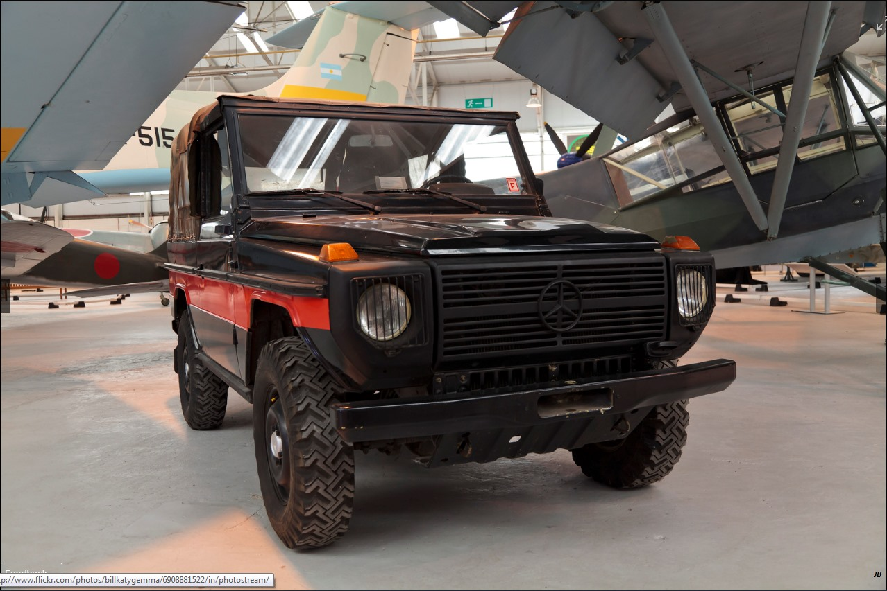
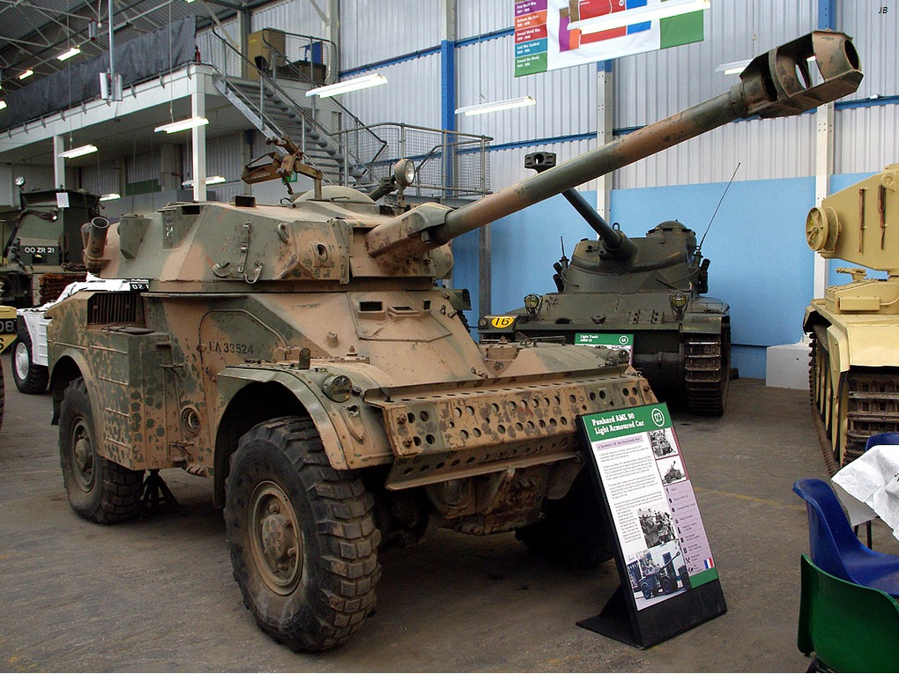
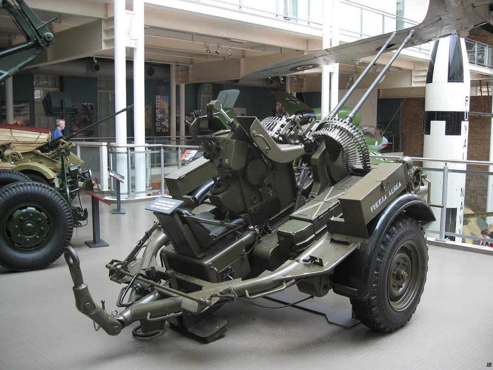
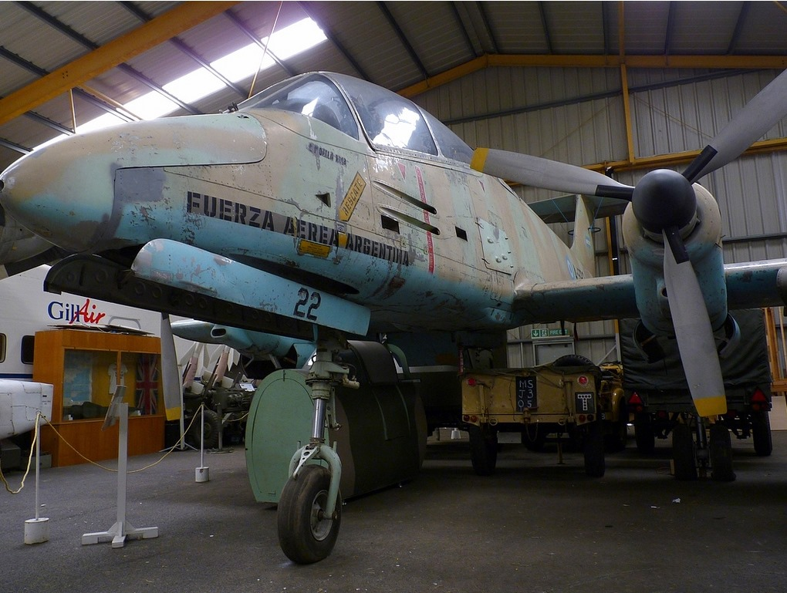
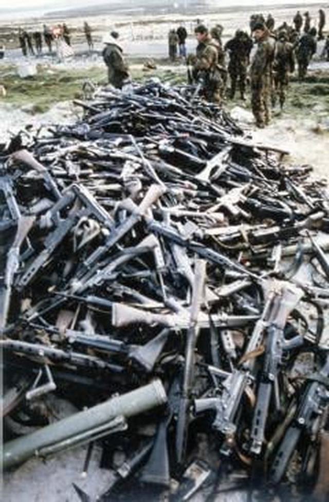

포클랜드 전쟁 마무리 - 배상금, 전리품, 파장
게시: 2022-06-16T06:30:21+09:00
<포클랜드 전쟁 배상금은 얼마였을까?> 아르헨티나는 다들 아시다시피 무모한 침공과 그에 따른 패전의 결과 군사정권이 결국 뒤집어졌음. 다음해인 1983년 10월 선거에서 알폰신 대통령이 뽑히면서 페론당이 끝장남. 영국은 승전으로 버프를 얻은 댓처의 보수당이 정권 연장에 성공. 근데 일설에 따르면 승전 버프라기보다는 전쟁으로 인해 전체 공업 생산이 3% 늘어나면서 경제적으로 낙관론이 커진 것이 선거 승리의 주된 원인이라고도 함. 하지만 영국은 258명의 전사자와 6척의 군함, 그리고 34대의 항공기를 상실했고, 전쟁비용으로 약 28억 파운드를 날림. 이는 현재 가치로 대략 92억 파운드, 그러니까 대략 14.5조원을 남대서양에 쏟아부은 것. 영국이 아르헨티나의 항복을 받아내었으니 전쟁 배상금이 있었을까? 없었음. 어차피 아르헨티나는 당시 몇년마다 한번씩 국가부도를 내고 있었으므로 실질적으로 받아낼 돈도 없었지만, 정확하게는 애초에 국가가 항복을 하지 않았기 때문임. 항복은 부에노스 아이레스의 아르헨티나 군정부가 한 것이 아니라 그냥 포클랜드에 배치된 아르헨티나 점령군이 한 것. 그래서 이후에도 계속 적대 관계로 남음. 그러나 애초에 양측은 상대에 대해 선전포고를 한 적이 없어서 정식 전쟁 상태가 아니었고 따라서 공식 정전 협정도 없음. 다만 1989년에 양측은 외교 관계를 다시 정상화했고, 1998년에야 아르헨티나 메넴 대통령이 영국을 방문하여 우호를 다짐. 그러나 그것과는 별도로, 포클랜드가 누구 땅인지에 대해서는 양측 다 입장을 전혀 굽히지 않음. 아르헨티나는 지금도 포클랜드가 자국땅이라고 주장하고 있으며, 영국은 거기에 대해 논의하기를 거부. 그래서 영국은 지금도 포클랜드에 꽤 강력한 수비대를 배치해둔 상태. 현재 포클랜드를 지키는 영국군은 1천2백명. 지대공 미사일은 물론 비행장(RAF Mount Pleasant)도 갖추고 Typhoon 전투기 4대가 배치됨. 기타 구축함 또는 프리깃함을 포함한 최소 3척의 군함이 인근 해역을 초계. 참고로 포클랜드 주민 수는 3천4백명 정도. 배보다 배꼽이 더 큼.

<포클랜드 전쟁에 참전할뻔 했던 미해군함> 포클랜드 전쟁 당시 영국 해군이 투입한 항모는 HMS Hermes (2만9천톤, 28노트)와 HMS Invincible (2만2천톤, 28노트)의 2척. 이 두 항모 모두 아르헨티나 공군 또는 잠수함에게 격침되거나 작전이 불가능할 정도로 손상을 입을 가능성이 상존했음. 둘 중 하나라도 잃으면 포클랜드 원정은 포기해야 할 판. 그런 비상사태에 대해서도 되든 안되든 대책을 세워야 하는 것이 군수뇌부의 임무. 그래서 대책으로 세워둔 것이, 당시 이미 진수되어 열심히 취역 준비 중이던 인빈서블의 자매함 HMS Illustrious (사진1)의 마무리 작업을 서두르는 것. 실제로 일러스트리어스는 전쟁이 끝난지 1주일도 안된 6월 20일, 아직 완공되지도 않았는데 임시 취역하여, 그동안 전투에서 고생한 인빈서블의 교대를 위해 포클랜드로 달려감.

그런데 그 외에도 영국은 미국에 비밀리에 요청하여, 최악의 경우 미해군의 강습함(amphib)을 빌리기로 함. 미국도 거기에 동의하여 USS Iwo Jima (LPH-2, 1만8천톤, 22노트, 사진2)를 빌려주기로 약속함. 이 비밀 약속은 당연히 기밀이었으나 세월이 지나 최근에 공개됨.

이렇게 미국은 겉으로 드러내지만 않았을 뿐 사실상 영국군을 많이 지원했음. 그런 지원 내역 중 일부분은 영국 공군 Avro Vulcan 폭격기가 미군만 가진 Shrike 레이더호밍 미사일을 장착한 채 브라질 공군기지에 불시착하는 바람에 드러나기도 했으나, 당시 미국과 영국은 브라질에 애걸복걸하여 덮었음. 그러나 영국 함대에 USS Iwo Jima가 나타나면 그건 정말 숨기기가 어려운 상황이었는데도 지원을 약속함. 배만 빌려주는 것이 아니라 퇴역 미해군 수병 등 민간 요원들을 함께 지원해주는 것도 약속.
<중남미 전체 미친 포클랜드 전쟁의 여파> 이는 미국이 중남미 국가들과 맺은 지역 방어조약이었던 Rio 조약(Inter-American Treaty of Reciprocal Assistance, 줄여서 TIAR)의 위반에 해당. 실은 리오 조약은 중남미 국가들에 대한 공격은 미국에 대한 공격으로 간주한다는 것이었고, 엄밀히 따지면 아르헨티나가 영국 땅을 침공한 것이지 아르헨티나가 침공을 받은 것이 아니므로 이걸 리오 조약 위반이라고 보기는 어려웠으나, 이미 중미 국가들에 대한 미국의 내정 간섭과 침공 등에 대해 부정적인 인식을 가지고 있던 대부분의 중남미 국가들은 이로써 리오 조약은 끝장이라고 생각. 실제로 리오 조약의 일원이었던 멕시코는 2002년 포클랜드 전쟁을 미국의 위반 사례로 들며 조약에서 정식으로 탈퇴. 실제로는 미국의 이라크 침공에 항의하기 위함이었으나 아무튼 핑계로는 20년 전의 포클랜드 전쟁을 들먹임. 다른 중남미 국가들도 포클랜드 전쟁으로 인해 반미가 되었을까? 그건 딱히 아님. 당시 칠레는 아르헨티나와 영토 분쟁을 벌이고 있었고 아르헨티나군이 칠레를 침공할 수도 있는 상황이어서 아르헨티나의 패배를 무척이나 기뻐했음. 뿐만 아니라 아르헨티나를 제외한 모든 인접 남미 국가들은 모두 그 동네 골목대장 노릇을 하던 아르헨티나의 패배를 속으로는 고소하게 생각하며 웃었다고.

<저, 벤츠 대금은 누가 내실거죠?> 비록 아르헨티나로부터 전쟁 배상금을 받아내지는 못했지만 영국군은 이런저런 크고 작은 아르헨티나군의 장비들을 가져옴. 지난번에 언급한 아르헨티나군의 AN/TPS-43 대공레이더는 실제로 영국 공군이 스코틀랜드에 배치하여 요긴하게 잘 썼고, 기타 실제로는 못 써먹을 것들도 전시용으로라도 부득부득 들고옴. 그렇게 들고온 것 중 눈에 띄는 것은 Mercedes-Benz G-Class jeep들. 전쟁 발발 직후, 아르헨티나군은 20대의 벤츠 G-모델 지프들을 주문하여 포클랜드에 배치했는데, 그 대금을 지불하기도 전에 아르헨티나군이 항복하고 이 벤츠 지프들은 영국군 손에 넘어감. 독일 벤츠사는 당연히 고객인 아르헨티나 측에게 대금 결제를 요구했으나 돌아온 대답은 '댓처에게 물어보라'. 독일 벤츠사는 다행히 무지성은 아니라서 영국군에게 그 대금을 요청하지는 않았고 차량 반납을 요구하지도 않음. 저런 노획 장비는 합법적인 노획자 소유임. 다만 저 차량들에 대해서는 '미결제 품목'이라는 이유로 부품 공급을 거절했고, 벤츠는 차량보다 부품값이 더 비싸다는 것을 잘 알던 영국군도 굳이 비싼 부품값 내면서까지 벤츠 지프를 쓰고 싶지는 않았으므로, 결국 하나둘씩 고장이 나서 폐차 처리되거나 이렇게 박물관으로 들어감 (사진1)

사진2는 Bovington Tank Museum에 있는 아르헨티나군의 프랑스제 Panhard 90mm 경장갑차.

사진3는 런던의 Imperial War Museum에 있는 Rheinmetall 20mm 대공포.

사진4는 Tyne and Wear의 워싱턴 박물관에 있는 FMA IA 58 Pucará.

사진5는 아르헨티나 보병들이 쓰던 FN FAL 소총들. 이들 대부분은 영국군이 바다에 수장시켰으나, 일부는 훈련용 및 전시용으로 영국으로 들여왔고, 일부 병사들은 개인적으로 슬쩍하여 영국으로 반입함. 그 중 일부 병사는 발각되고 기소되어 18개월 형을 살았다고. 그런 식으로 들여온 FN FAL 소총들 중 일부는 돌아돌아 멀리 미국까지 흘러들어갔다고.
